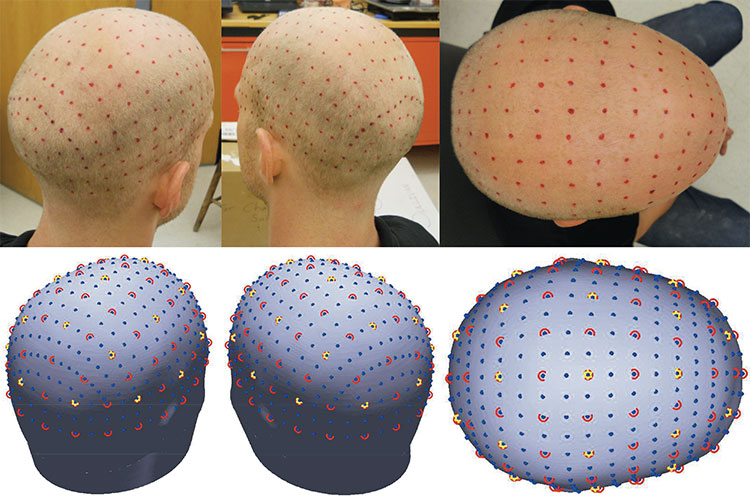

GiacoWeb™
GiacoWeb™ is a versatile elastomeric web that can aid in marking the locations of the International 10-20, 10-10, and 10-5 scalp coordinates. Also, electroencephalography (EEG) electrodes and near infrared spectroscopy (NIRS) optodes can be placed in any of the positions, essentially transforming the positioning web into an EEG head probe, NIRS head probe, or a combination of both. The web is available in sizes small, medium, and large. The materials used for the electrodes and the GiacoWeb are all functional magnetic resonance imaging (fMRI) or magnetoencephalography (MEG) compatible. GiacoWeb is manufactured using positions calculated with our Mesh2EEG algorithm in order to provide direct co-registration of the scalp coordinates on the head to the ones on the corresponding MRI head model. Also, using the Mesh2EEG algorithm to design the GiacoWeb allows us to fabricate custom webs based on individual MRI 3D models. Please fill out the form below if you are interested in availability, sizes, and pricing.
GiacoWeb used to mark 329 EEG electrode scalp coordinates on a male adult head.
GiacoWeb used to position 65 EEG electrodes following the 10-10 coordinates and 24 NIRS optodes on the sensorimotor cortex.
GiacoWeb used to position 65 EEG electrodes following the 10-10 coordinates and 24 NIRS optodes on the sensorimotor cortex on a male adult head.

Correspondence of EEG scalp coordinates on the adult head and 3D head model. The positions on the 3D head model were obtained with our Mesh2EEG algorithm.
Please fill out the following form if you are interested in the GiacoWeb. We will not share your name with anyone.